Unofficial study solution; not an official GTU answer key. Answers have not been independently verified. English text reflows; source equations, diagrams and Gujarati retain their original appearance. Use Enlarge image to inspect them.
આ બિનસત્તાવાર અભ્યાસ ઉકેલ છે, સત્તાવાર GTU જવાબવહી નથી. PDF માંથી ગુજરાતી લખાણ સાચું નીકળતું નથી, તેથી દરેક જવાબ મૂળ ચિત્રરૂપે જાળવ્યો છે. વાંચવા માટે ચિત્ર મોટું કરો. મૂળ પ્રશ્ન અને પરીક્ષાના વિકલ્પોની સૂચનાઓ અનુસરો.
Coverage: all five questions and every printed OR alternative are answered: 28 parts. The authentic English question is retained in both language views; answers are in English and Gujarati. Diagrams are schematic and not to scale.
Printed instructions: attempt all questions; make suitable assumptions; figures on the right indicate full marks; simple and non-programmable scientific calculators are permitted; the English version is authentic.
Important assumptions: heat into a system and work by it are positive unless otherwise stated. Q2 OR(b) supplies rates but no duration, so a rate of internal-energy change is reported. Other limits and assumptions are stated with each solution. These are study materials, not an official GTU answer key.
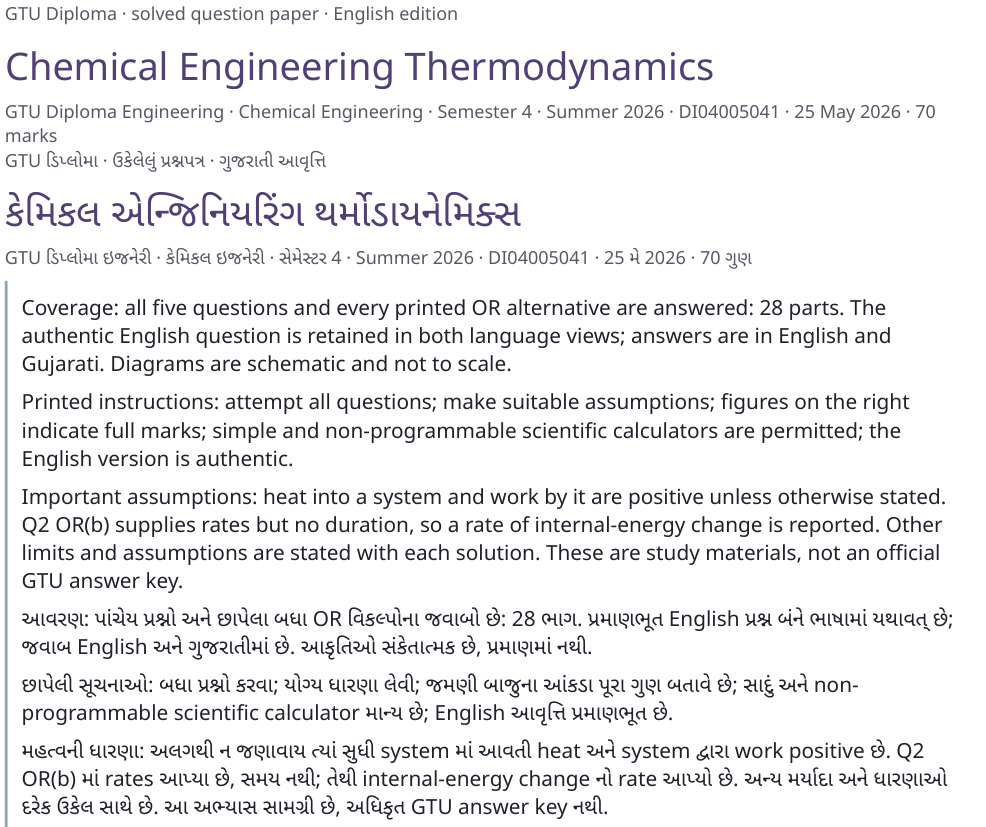
Question 1
Q1 · Fundamentals and phase rule
Q.1 (a) · State Zeroth Law of Thermodynamics with its importance. · 3 marks
Zeroth law: If A is in thermal equilibrium with B and B is in thermal equilibrium with C, then A and C are also in thermal equilibrium with each other.
• Thermal equilibrium means no net heat transfer between bodies in thermal contact.
• The law establishes temperature as a measurable property and gives the basis for a thermometer.
• Example: when thermometer B equilibrates separately with A and C and gives the same reading, A and C have the same temperature.
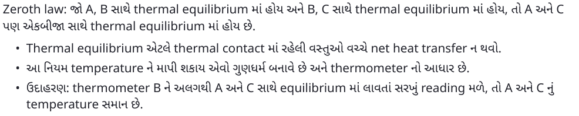
Q.1 (b) · Explain the Scope and limitations of thermodynamics. · 4 marks
Thermodynamics studies macroscopic energy, heat, work and their relation to properties such as pressure, volume and temperature.
Scope
• Energy balances connect heat, work and changes of system energy in engines, compressors and chemical equipment.
• Equilibrium and the second law predict feasible direction and ideal performance limits; phase and chemical equilibrium can also be studied.
Limitations and example
Thermodynamics alone does not give process speed, a detailed molecular mechanism or heat- transfer rate; kinetics and transport laws are also needed. Its equilibrium relations require the stated equilibrium assumptions. For example, it predicts the maximum engine efficiency, not how rapidly its fuel burns.
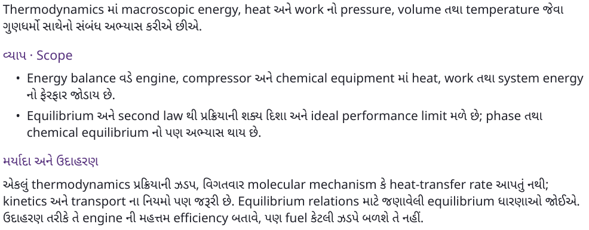
Q.1 (c) · State Gibb’s Phase rule. Calculate degree of freedom for (i) water at triple point (ii) Liquid water in equilibrium with its vapor. · 7 marks
Gibbs phase rule: F = C − P + 2 for a non-reacting equilibrium system with no additional constraints. F is the number of independent intensive variables, C the number of independent chemical components and P the number of coexisting phases; 2 accounts for temperature and pressure.
Given and assumptions
Pure water: C = 1; there is no chemical reaction.
Temperature and pressure are not externally fixed.
Triple point: ice, liquid water and vapour coexist; P = 3.
Liquid–vapour equilibrium: two phases coexist; P = 2.
Step-by-step solution
1. Formula — F = C − P + 2.
2. Triple point · substitution — F = 1 − 3 + 2.
3. Calculate — F = 0 (dimensionless).
4. Liquid with vapour · substitution — F = 1 − 2 + 2.
5. Calculate — F = 1 (dimensionless).
Triple point: F = 0; liquid–vapour equilibrium: F = 1.
At the triple point neither T nor P is independently variable while all three phases remain. In the two-phase case choose T or P; saturation fixes the other. Check: F is dimensionless and the result assumes no extra constraints.
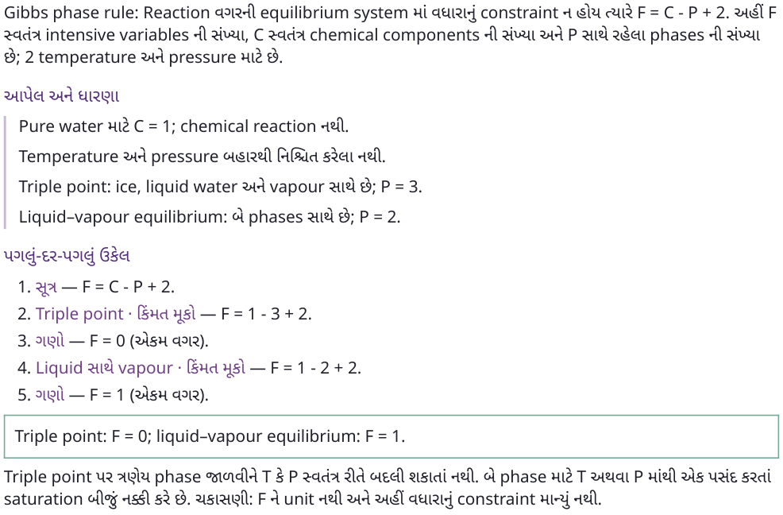
Q.1 (c) · Differentiate : (i) State function and Path function (ii) Reversible and irreversible process · OR · 7 marks
Compare state and path quantities by their dependence on the route, and compare processes by whether system and surroundings can both be exactly restored.
(i) State function and path function
![Q.1 (c) OR: preserved source formula, table or diagram, page 5. Extracted text context (formula notation may be incomplete): Point State function Path function Dependence A property fixed by the state; its change depends only on initial and final states. Heat or work transfer depends on the actual path between states. Differential Exact differential, for example dU. Inexact differential, for example δQ or δW. A full cycle has ΔU = 0; U, H, P and T are state properties. Cycle and examples Net heat and work in a cycle need not be zero; Q and W are path quantities.](summer-2026.assets/0004.webp)
(ii) Reversible and irreversible process
![Q.1 (c) OR: preserved source formula, table or diagram, page 5. Extracted text context (formula notation may be incomplete): Point Reversible Irreversible Nature Ideal limit: reversal restores both system and surroundings exactly. An actual irreversible process cannot restore both without another net change. Mechanism Quasistatic with infinitesimal driving forces and no dissipation. Finite gradients, friction, free expansion or mixing cause irreversibility. Entropy and example Sgen = 0; ideal frictionless quasistatic expansion. Sgen > 0; free expansion or frictional compression.](summer-2026.assets/0005.webp)
Quasistatic alone is not sufficient for reversibility if friction or another dissipative effect exists.
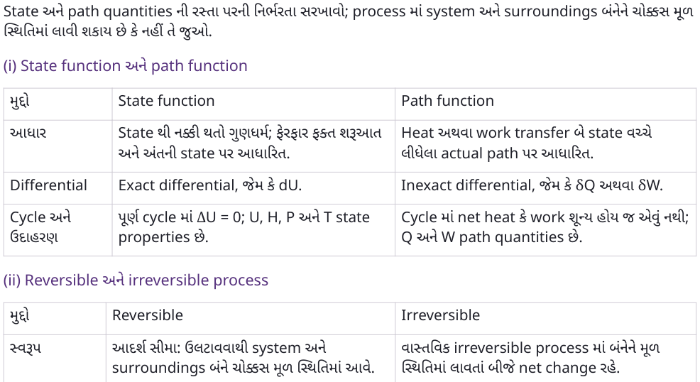
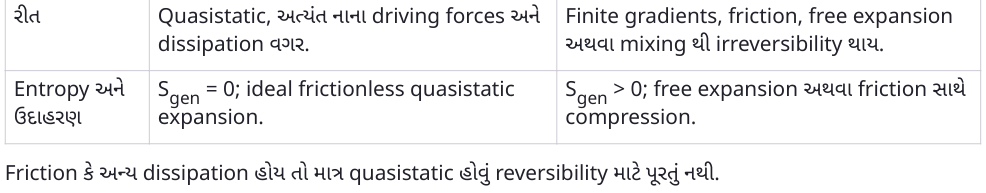
Question 2
Q2 · First law and energy balances
Q.2 (a) · Define open, close and isolated system with example. · 3 marks
Thermodynamic system: a chosen quantity of matter or region separated from its surroundings by a boundary.
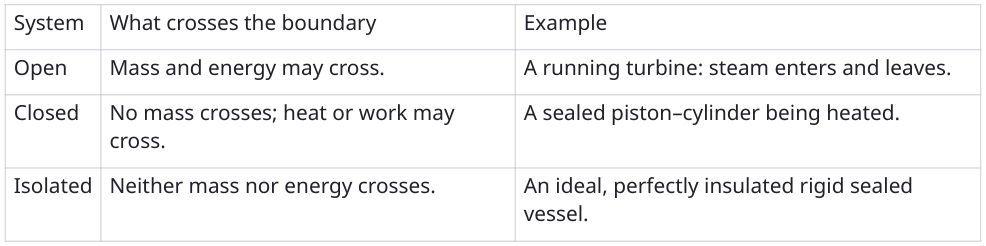
Real insulation is imperfect, so a thermos only approximates an isolated system.
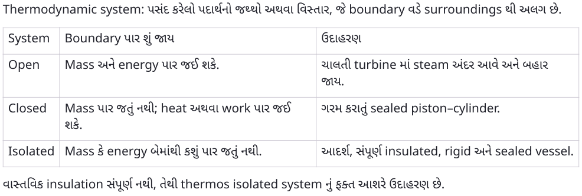
Q.2 (b) · Explain enthalpy and heat capacity. · 4 marks
Enthalpy: H = U + PV is a state property combining internal energy U with the pressure–volume term. It is especially useful for flowing streams, where Pv includes flow work.
Heat capacity: the heat required for a unit temperature rise depends on the specified process. For a fixed-composition, simple compressible system, the common total heat capacities are:
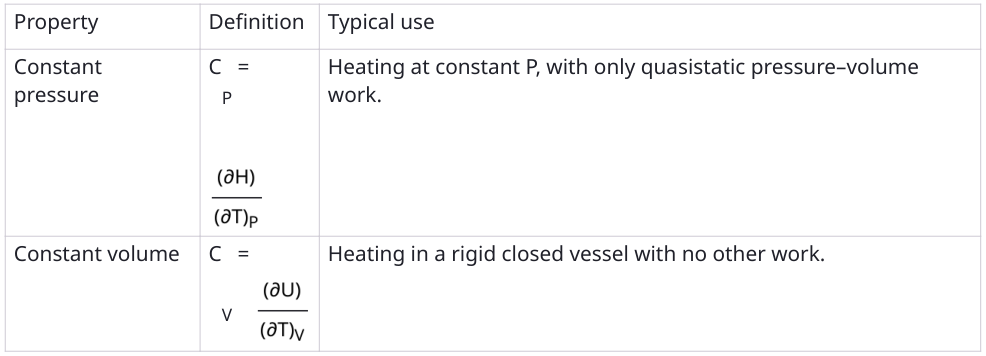
H and U have units kJ; total C has units kJ K⁻¹. Example: a fixed mass heated in a rigid vessel uses CV. A specific heat capacity is per unit mass; capacity can vary with temperature and the process.
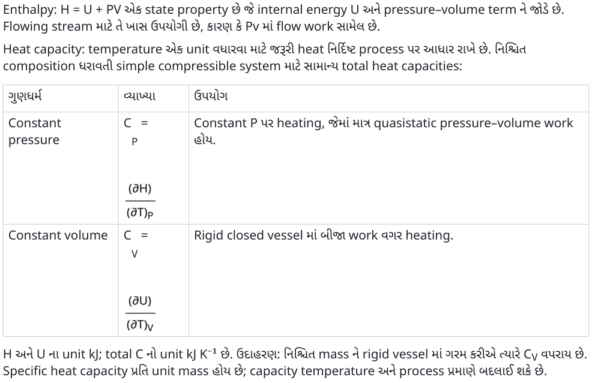
Q.2 (c) · Derive an equation of first law of thermodynamics for non-flow process. · 7 marks
First law: energy is conserved. For a closed, non-flow system the heat supplied equals its energy increase plus work done by the system.
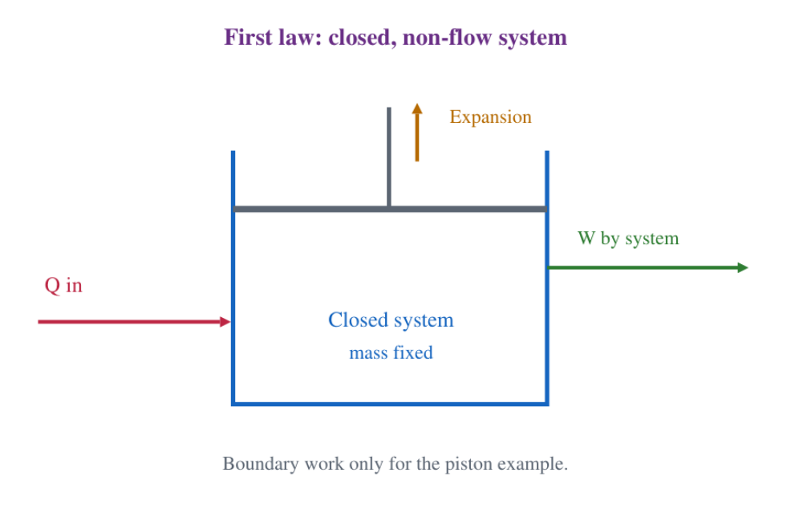
A sealed piston illustrates heat into and boundary work out of a closed system; not to scale.
Assumptions and signs
• The system has fixed mass. Q is positive into the system and W is positive when done by the system; W includes every mode of work.
• The general relation includes kinetic and potential energy. Only in the stationary example below are their changes negligible.
Derivation
1. Energy balance — Energy in by heat − energy out by work = increase in stored energy.
2. Differential form — dE = δQ − δW, where E = U + KE + PE.
3. Expand — δQ = dU + d(KE) + d(PE) + δW.
4. Integrate from 1 to 2 — Q − W = (U2 − U1) + ΔKE + ΔPE.
5. Stationary system — When ΔKE = ΔPE = 0: Q − W = U2 − U1 = ΔU.
General non-flow first law: Q − W = ΔU + ΔKE + ΔPE.
For a quasistatic piston with only boundary work, W = ∫12 P dV. For an irreversible piston use external boundary pressure in the work integral. In a rigid vessel this boundary work is zero, although shaft work may still occur.
Illustrative example
Assume a stationary closed system; Q = 500 kJ into it; W = 120 kJ done by it.
1. Formula — ΔU = Q − W.
2. Substitute — ΔU = 500 kJ − 120 kJ.
3. Calculate — ΔU = 380 kJ.
Check: the positive stored-energy change is less than the heat input because the system also delivers work. The formula is not a steady-flow balance.
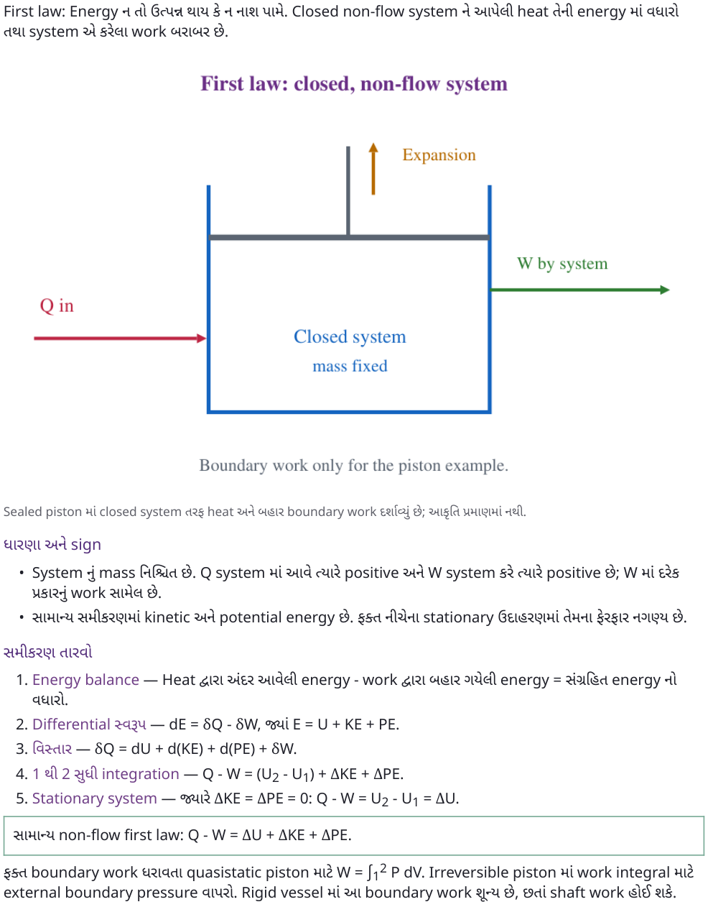
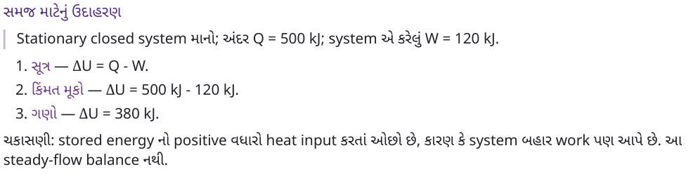
Q.2 (a) · Show that internal energy is a state function. · OR · 3 marks
Internal energy U is a state function: its change between two fixed equilibrium states is independent of the process path.
• For a closed stationary system, ΔU = Q − W with heat into and work by the system positive.
• The first law gives ∮(δQ − δW) = 0 for a cycle, so dU is exact and U returns to its original value.
• Example: Q = 120 kJ, W = 20 kJ and Q = 70 kJ, W = −30 kJ are two paths with the same ΔU = 100 kJ. Heat and work individually differ.
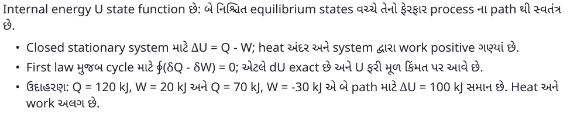
Q.2 (b) · A system consisting of some fluid is stirred in a tank. The rate of work done on the system by the stirrer is 3.5 hp. The heat generated due to stirring is dissipated to the surrounding. If the heat transferred to the surrounding is 4600 kJ/hr, determine the change in internal energy. · OR · 4 marks
Use the closed-system first law in rate form; work input and heat loss are both positive magnitudes below.
Given and assumptions
Stirrer power input = 3.5 hp.
Heat transfer to surroundings = 4600 kJ h⁻¹.
Assume mechanical horsepower: 1 hp = 0.7457 kW.
1 kW = 3600 kJ h⁻¹; assume a rigid, closed, stationary tank, with no other energy transfers.
Duration is not supplied.
Step-by-step solution
1. Convert horsepower — Power in = 3.5 hp × 0.7457 kW hp⁻¹.
2. Calculate power — Power in = 2.60995 kW.
3. Convert to hourly rate — Power in = 2.60995 kW × 3600 kJ h⁻¹ kW⁻¹.
4. Calculate work rate — Power in = 9395.82 kJ h⁻¹.
Internal energy increases at 4795.82 kJ h⁻¹ (about 1.332 kW).
The printed question gives rates, not an elapsed time: a finite ΔU cannot be determined uniquely. If the rates remain constant for t hours, ΔU = 4795.82 t kJ, where t is the numerical time in hours; for 1 h only, ΔU = 4795.82 kJ. Check: the positive rise equals input minus loss; if all generated energy left as heat, the two rates would be equal.
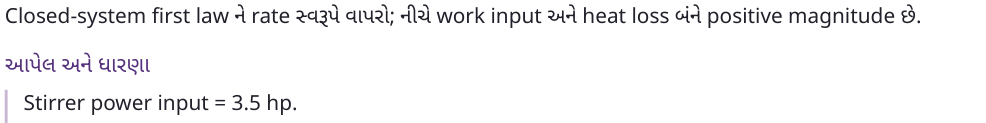
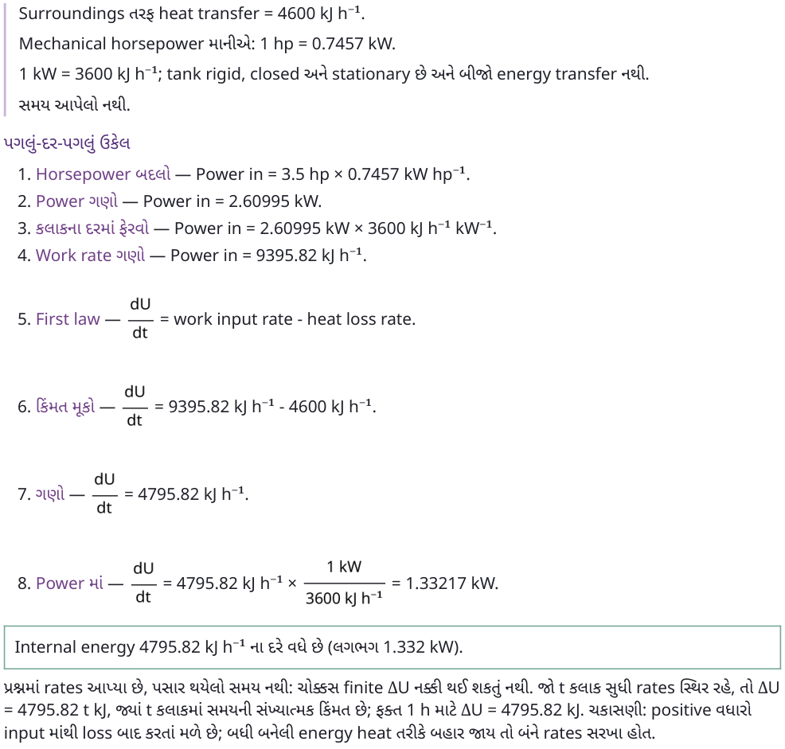
Q.2 (c) · Derive an equation of first law of thermodynamics for flow process. · OR · 7 marks
Steady-flow first law: heat and work cross a control volume while flowing streams carry mass and energy through it.
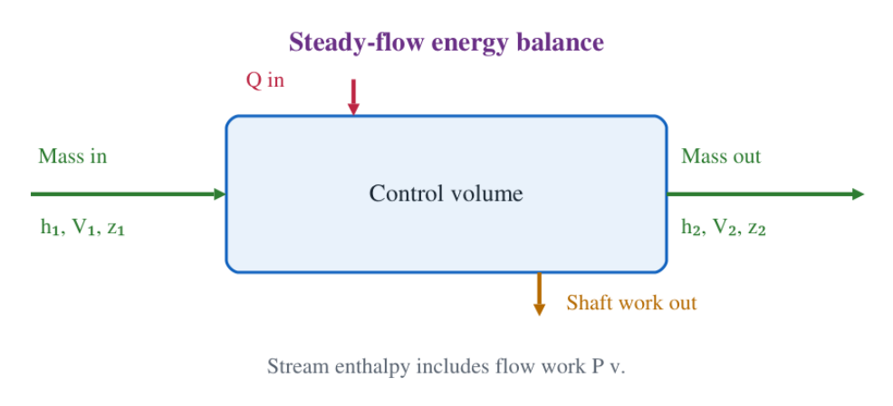
One inlet and one outlet; h includes the flow work at each port.
Assumptions and notation
• Steady state: no accumulation of mass or energy in the control volume; one inlet and one outlet have equal mass rate mrate.
• Heat rate Qrate is positive in; shaft work rate Ws,rate is positive out. Let v be specific volume, V flow speed, z elevation and g gravitational acceleration.
• Specific stream energy has internal, flow-work, kinetic and potential terms. Changes in speed or height must not be discarded unless negligible.
Derivation
2. Steady energy balance — 0 = Qrate − Ws,rate + mrate(e1 − e2).
3. Enthalpy definition — h = u + Pv; flow work is therefore already included in h.
Use consistent energy units: h, V² divided by 2 and gz are all in J kg⁻¹ when SI base units are used;
convert all to kJ kg⁻¹ if desired. Do not add Pv a second time.
Illustrative example
Assume negligible kinetic and potential changes.
Heat input per unit mass q = 400 kJ kg⁻¹; shaft work out per unit mass ws = 150 kJ kg⁻¹.
1. Reduced formula — h2 − h1 = q − ws.
2. Substitute — h2 − h1 = 400 kJ kg⁻¹ − 150 kJ kg⁻¹.
3. Calculate — h2 − h1 = 250 kJ kg⁻¹.
Check: enthalpy increases by the heat added less shaft work delivered. Unsteady flow requires an accumulation term, and multiple ports require a sum for each stream.
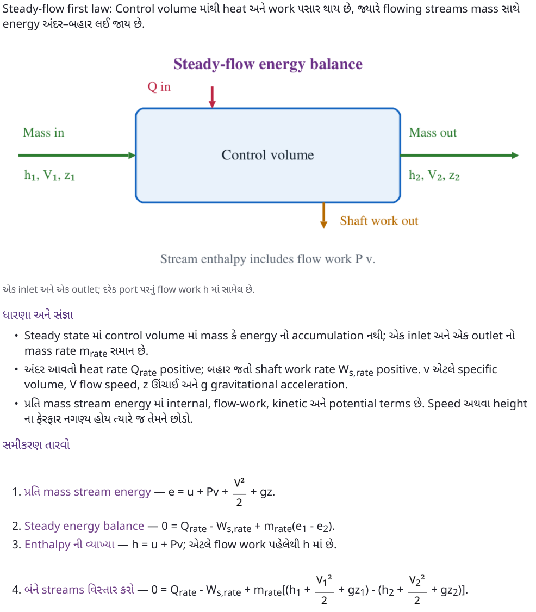
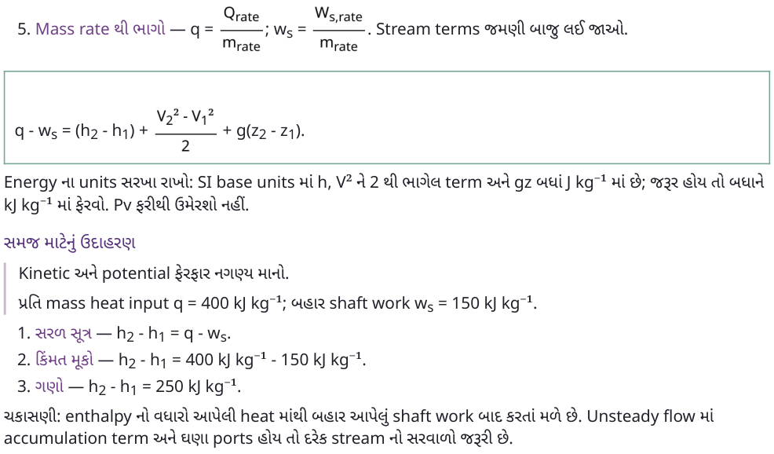
Question 3
Q3 · Pure fluids and ideal-gas processes
Q.3 (a) · Define equation of state. Write down Vander Waals Equation. · 3 marks
Equation of state: a relation among equilibrium properties, commonly pressure P, molar volume vm and temperature T, written f(P, vm, T) = 0.
The van der Waals equation on a molar basis is:
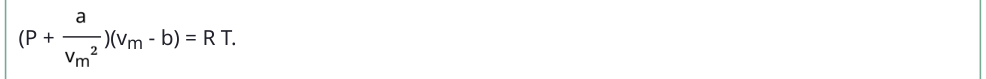
• a accounts for intermolecular attraction; b accounts for finite molecular volume.
• R is the molar gas constant; consistent units and absolute T are required.
• Example: setting a = b = 0 gives the ideal-gas equation P vm = R T.
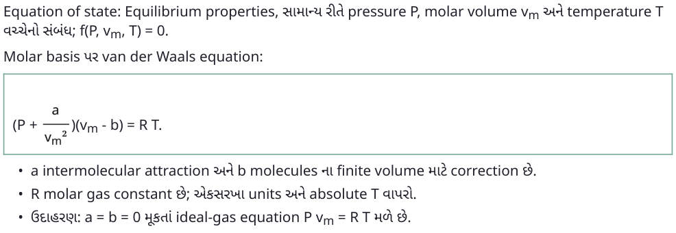
Q.3 (b) · Prove Cp – Cv = R for ideal gases. · 4 marks
For an ideal gas of fixed amount N moles, show that the molar heat capacities satisfy CP,m − CV,m = R.
Assumptions
Fixed composition and ideal-gas equation PV = NRT; internal energy and enthalpy depend on temperature only. Heat capacities may depend on T.
Derivation
1. Enthalpy definition — H = U + PV.
2. Ideal gas — H = U + NRT.
3. Differentiate — dH = dU + NR dT.
4. Heat capacities — dU = N CV,m dT; dH = N CP,m dT.
5. Substitute and cancel N dT — N CP,m dT = N CV,m dT + NR dT.
CP,m − CV,m = R.
Check: every term has units J mol⁻¹ K⁻¹, so CP,m exceeds CV,m by R. On a mass basis use the corresponding specific gas constant; this simple relation is not generally valid for a real gas.
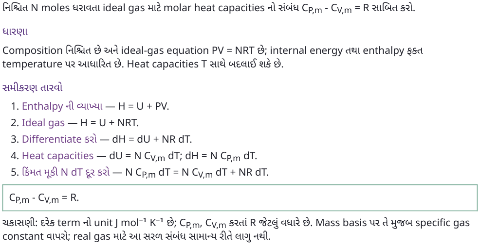
Q.3 (c) · Discuss PVT behavior of a pure fluid with PV diagram. · 7 marks
PVT behaviour describes how equilibrium pressure P, volume and temperature T of a pure substance are related. The figure uses specific volume v = V per unit mass, so its shape is independent of sample mass.
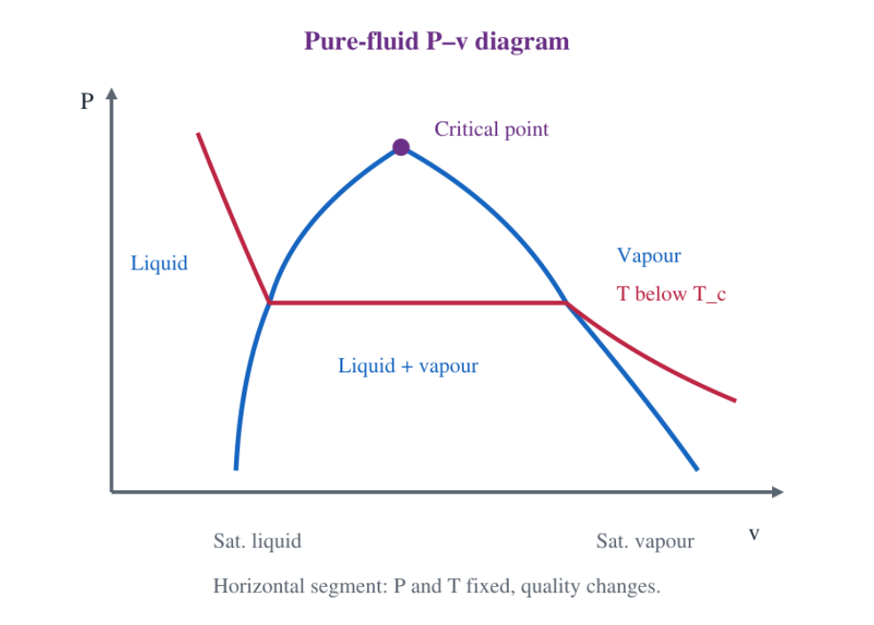
Schematic P–v saturation dome and one subcritical isotherm; not to scale.
Reading the diagram
![Q.3 (c): preserved source formula, table or diagram, page 18. Extracted text context (formula notation may be incomplete): Region Behaviour Compressed liquid Left of the saturated-liquid boundary: v changes relatively little with pressure. Liquid + vapour Between saturated-liquid and saturated-vapour boundaries: at a selected subcritical saturation temperature P remains constant while liquid vaporises. Superheated vapour Right of the saturated-vapour boundary: further expansion increases vapour volume. Critical region The two saturation boundaries meet at the critical point. Above the critical temperature there is no liquid–vapour phase-change plateau.](summer-2026.assets/0033.webp)
they are not independent. As the critical point is approached the difference vg − vf tends to zero.
Illustrative example
Water at 1 bar saturation: T ≈ 99.6 °C.
Assume x = 0.50, vf = 0.00104 m³ kg⁻¹ and vg = 1.694 m³ kg⁻¹.
1. Formula — v = vf + x(vg − vf).
2. Substitute — v = 0.00104 m³ kg⁻¹ + 0.50(1.694 − 0.00104) m³ kg⁻¹.
3. Calculate — v = 0.84752 m³ kg⁻¹.
For this illustrative wet mixture, v ≈ 0.848 m³ kg⁻¹.
Check: v lies between the two saturation values. The sketch omits the solid region and is qualitative, not a complete P–v–T surface.
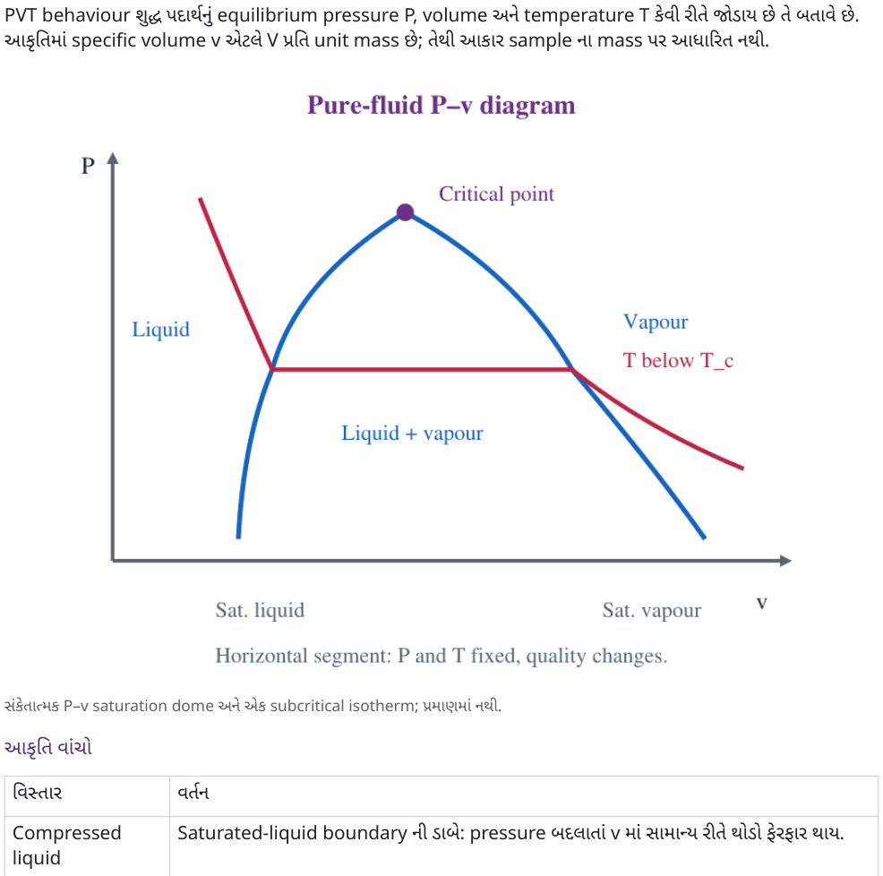
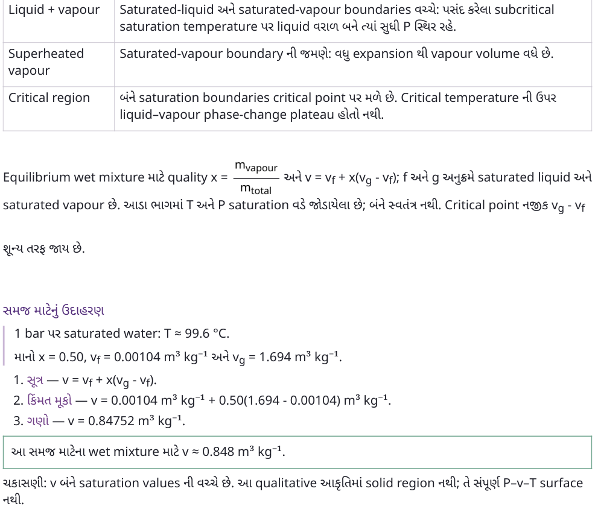
Q.3 (a) · Show that dH= dQ for constant pressure process. · OR · 3 marks
For a closed, stationary, simple compressible system at constant pressure, assume only quasistatic pressure–volume work, with no other work.
1. First law — δQ = dU + P dV.
2. Enthalpy — H = U + PV, so dH = dU + P dV + V dP.
3. Constant P — dP = 0, hence dH = dU + P dV = δQ.
Under these conditions, δQ = dH; over the process Q = ΔH.
Example: heating a frictionless piston at fixed pressure with no shaft work. Heat is a path transfer, so δQ is more precise than the printed dQ. This is not a general constant-pressure identity when other work or kinetic-energy changes are present.
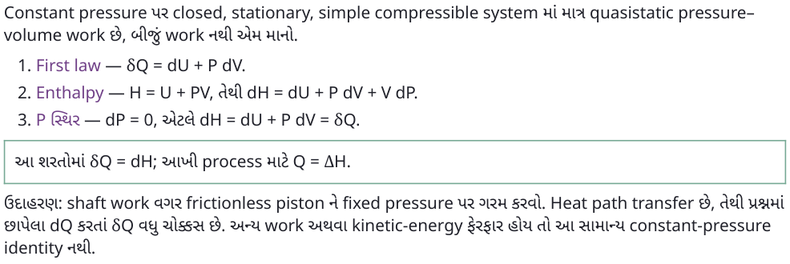
Q.3 (b) · Explain polytropic process of ideal gas. · OR · 4 marks
A polytropic process follows P Vn = constant, with a constant exponent n for the path. For a fixed quantity of ideal gas, PV = NRT relates the end states.
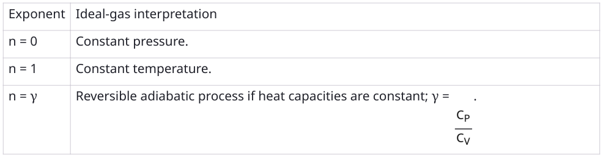
parameter, not a universal gas constant; this work formula does not cover n = 1 or arbitrary
irreversible boundary work.
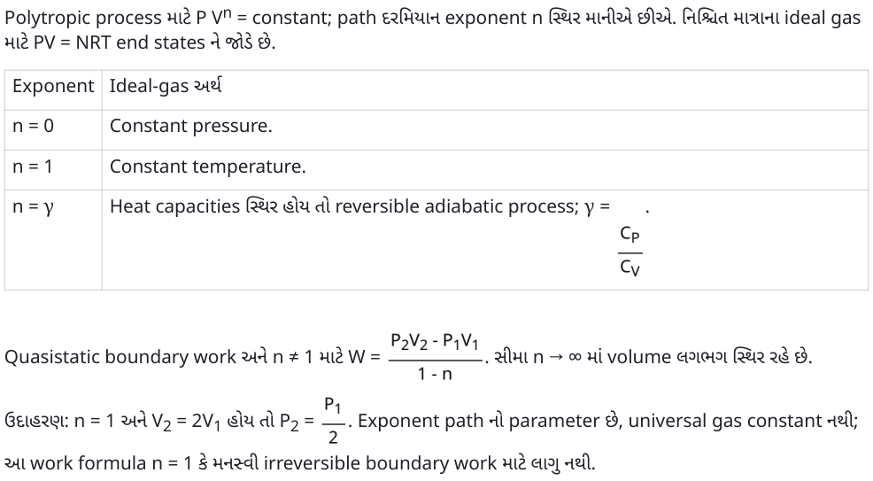
Q.3 (c) · Derive the equation of work done for isothermal process of ideal gas. · OR · 7 marks
Isothermal work is boundary work during a constant-temperature process. Derive it for a reversible ideal-gas expansion or compression.
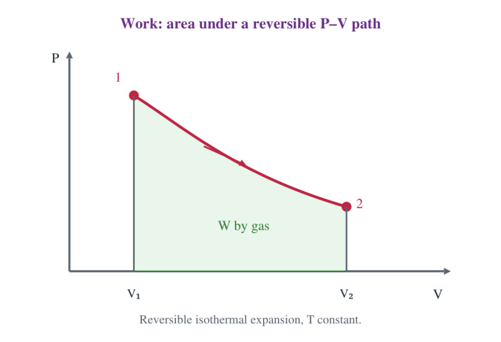
For expansion, the area under the reversible P–V curve is work done by the gas.
Assumptions and sign
• Closed system with N moles of ideal gas; T is constant in kelvin; no work mode other than quasistatic boundary work.
• Work W is positive when done by the gas; P is the equilibrium boundary pressure. V1 and V2 are positive.
Derivation
2. Boundary work — δW = P dV.
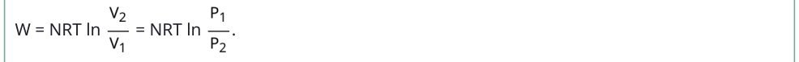
For an ideal gas U depends only on T, so ΔU = 0 and Q = W under the same closed-system assumptions. ln is the natural logarithm of a dimensionless ratio.
Illustrative example
N = 1 mol; T = 300 K; V2 = 2V1.
R = 8.314 J mol⁻¹ K⁻¹; ln 2 ≈ 0.693147.
2. Substitute — W = 1 mol × 8.314 J mol⁻¹ K⁻¹ × 300 K × ln 2.
3. Multiply — W = 2494.2 J × 0.693147.
4. Calculate — W ≈ 1728.85 J = 1.729 kJ.
Check: expansion gives positive work; compression gives negative work. This P dV expression does not describe arbitrary irreversible expansion, even when the temperature is constant.
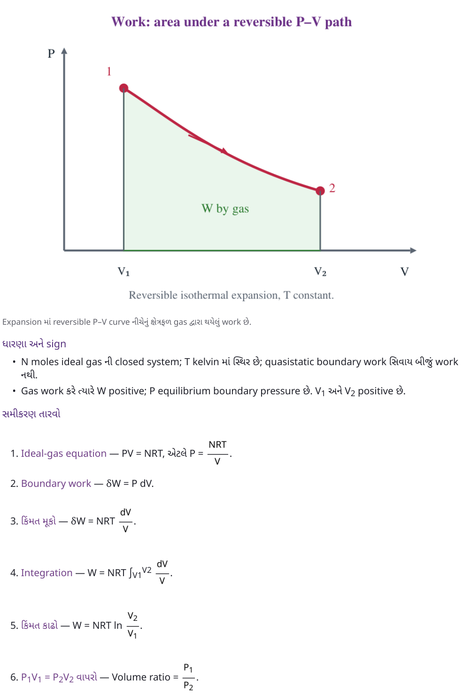
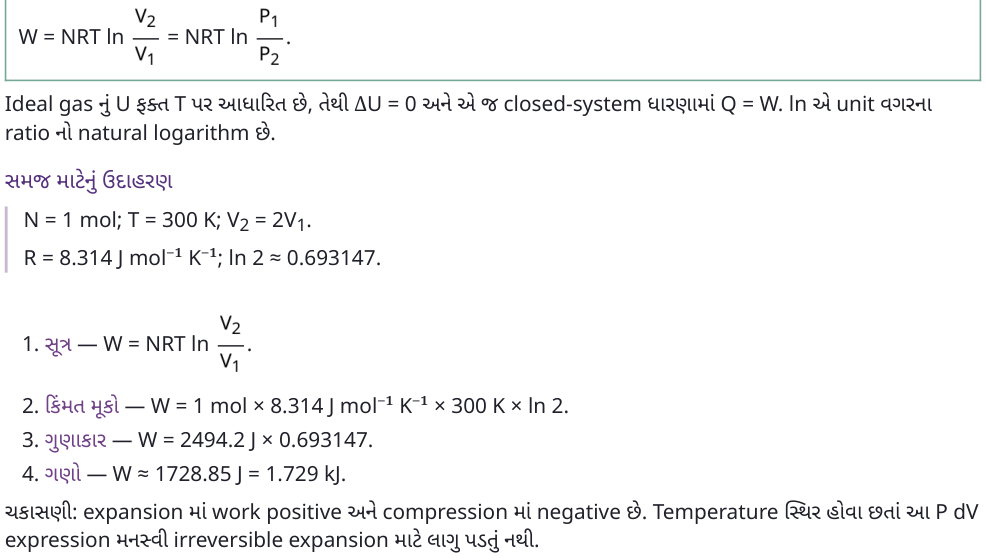
Question 4
Q4 · Second law, entropy and Carnot cycle
Q.4 (a) · A heat engine operates between 800 K and 350 K . Calculate maximum efficiency of heat engine. · 3 marks
The maximum heat-engine efficiency is the reversible Carnot efficiency between two reservoirs at absolute temperatures.
Given
Hot reservoir TH = 800 K.
Cold reservoir TC = 350 K.
Assume a reversible engine operating between these two reservoirs.
Step-by-step solution
3. Calculate — ηmax = 1 − 0.4375 = 0.5625.
4. Percentage — ηmax = 0.5625 × 100% = 56.25%.
Maximum efficiency = 56.25%.
Check: the temperatures are in kelvin and the efficiency lies between 0 and 100%. Real irreversible engines operate below this reversible limit.
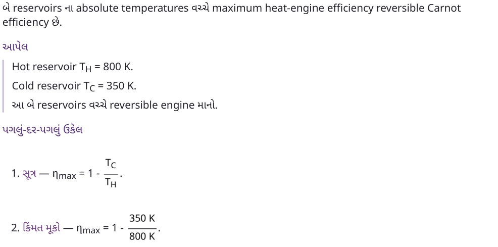
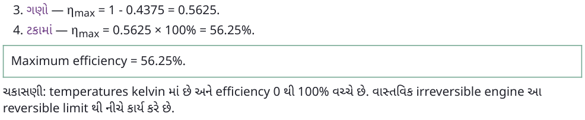
Q.4 (b) · Write down Kelvin plank and Clausius statement for second law of thermodynamics. · 4 marks
The second law restricts the direction of heat and work interactions, beyond energy conservation.
![Q.4 (b): preserved source formula, table or diagram, page 28. Extracted text context (formula notation may be incomplete): Statement Meaning and example Kelvin– Planck No cyclic device can have the sole effect of absorbing heat from a single thermal reservoir and converting it entirely into net work. A heat engine producing work must reject heat elsewhere. Clausius No cyclic device can have the sole effect of transferring heat from a colder body to a hotter body. A refrigerator can do so only with another effect, such as work input.](summer-2026.assets/0057.webp)
The statements are equivalent formulations of the second law. The word “sole” matters: neither prohibits an assisted refrigerator or every non-cyclic heat-to-work process.
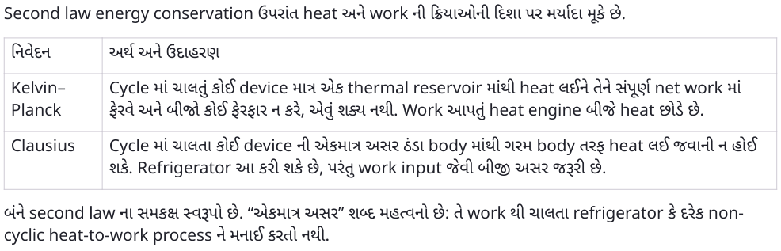
Q.4 (c) · Derive an expression of entropy change involving ideal gas for constant volume process. · 7 marks
Entropy change is a state-property difference. Find it for a fixed mass of ideal gas between equilibrium states at the same volume.
Assumptions and notation
• Closed simple compressible ideal gas, fixed mass m, constant volume and equilibrium end states. T is absolute temperature; cv is specific heat capacity at constant volume.
• Use a reversible path between the states for integration; the actual process need not be reversible. The logarithmic form additionally assumes constant cv.
Derivation
2. Reversible first law — δQrev = dU + P dV.
3. Ideal gas and constant volume — dU = m cv(T) dT; dV = 0.
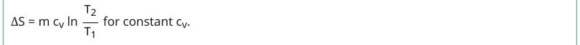
Illustrative example
m = 1 kg; cv = 0.718 kJ kg⁻¹ K⁻¹, assumed constant.
T1 = 300 K; T2 = 600 K; volume is constant.
ln 2 ≈ 0.693147.
3. Simplify — ΔS = 0.718 kJ K⁻¹ × 0.693147.
4. Calculate — ΔS = 0.49768 kJ K⁻¹.
Check: heating makes ΔS positive and the unit is kJ K⁻¹. If cv varies appreciably, use the integral rather than a single constant value; do not substitute actual irreversible heat into δQrev.
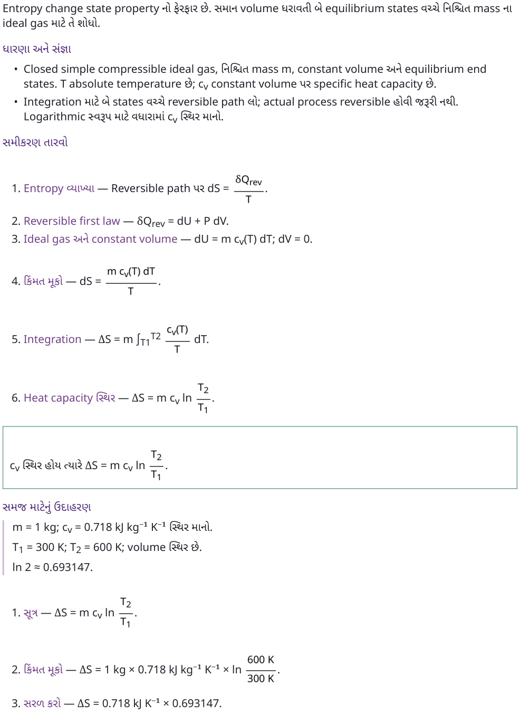
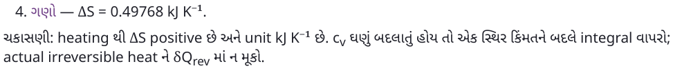
Q.4 (a) · Explain the Statement of Third Law of thermodynamics. · OR · 3 marks
Third law: the entropy of a pure, perfect crystal approaches zero as its temperature approaches absolute zero, 0 K.
• A perfect crystal has a unique, fully ordered ground state; the law sets a reference for absolute entropy.
• Absolute zero cannot be attained by a finite sequence of operations.
• Example: an ideal perfectly ordered NaCl crystal has S → 0 as T → 0 K. A disordered or degenerate ground state can retain residual entropy and is not the perfect-crystal case.
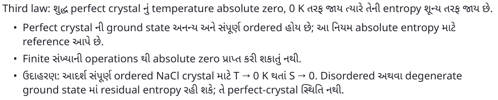
Q.4 (b) · Explain heat pump and heat engine with neat diagram. · OR · 4 marks
A heat engine converts part of heat from a hot source into work; a heat pump uses work to deliver heat to a warmer space.
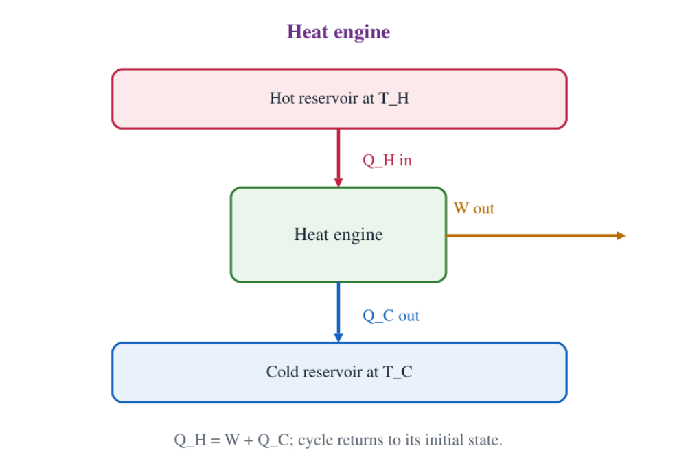
Heat engine: positive arrows show heat supplied, heat rejected and useful work output.
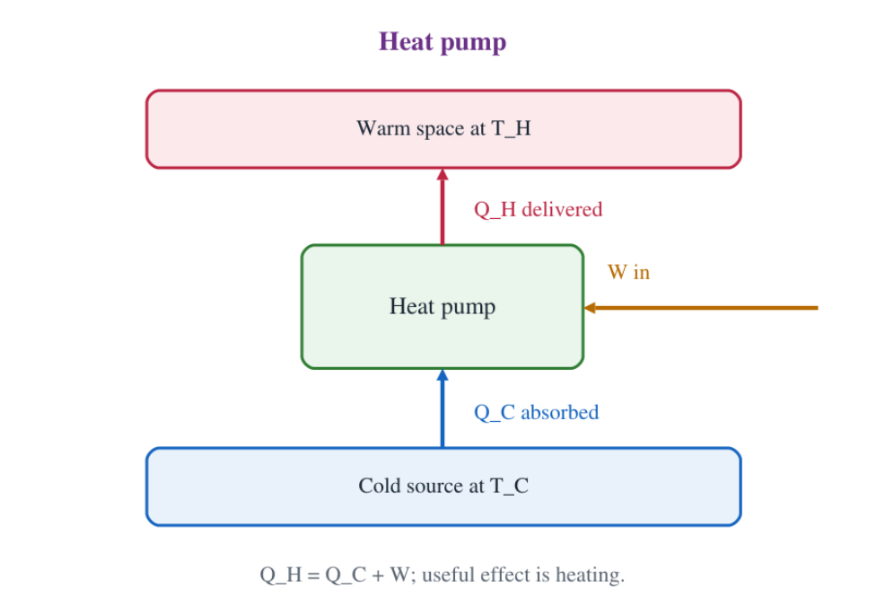
Heat pump: work input drives heat from the cold source to the warm space.
Construction — part and purpose
1. Both arrangements use a hot and a cold reservoir with a cyclic working device between them.
2. An engine uses a working fluid and piston or turbine to produce work. A practical heat pump uses a compressor, heat exchangers and an expansion device; the schematic represents the complete loop.
Working — step and reason
1. Engine: take QH from the hot reservoir, deliver Wout and reject QC to the cold reservoir, returning to the initial state. Rejection is required by the second law.
2. Heat pump: supply Win to extract QC from the cold source and deliver QH to the warm space; work makes the cold-to-hot transfer possible.
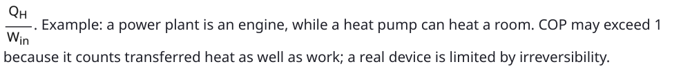
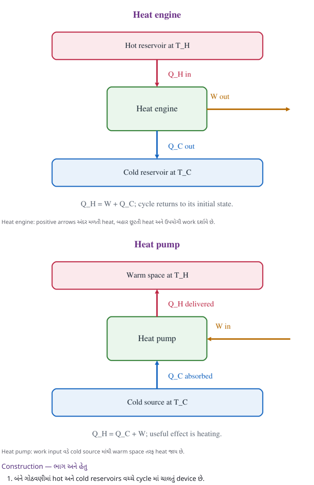
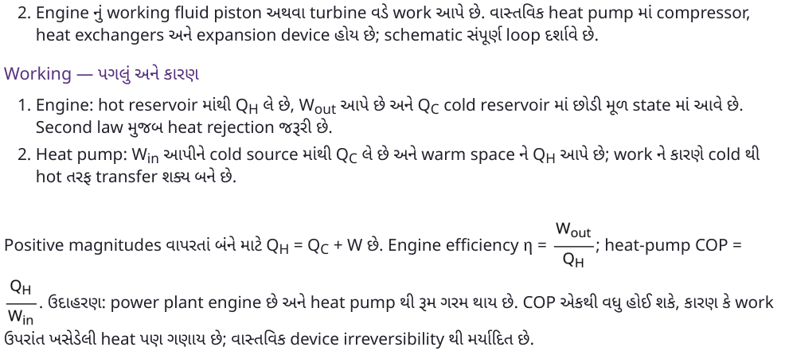
Q.4 (c) · Explain Carnot cycle in detail with diagram. · OR · 7 marks
The Carnot cycle is an ideal reversible heat-engine cycle between reservoirs at TH > TC. It establishes the maximum possible efficiency for those temperatures.
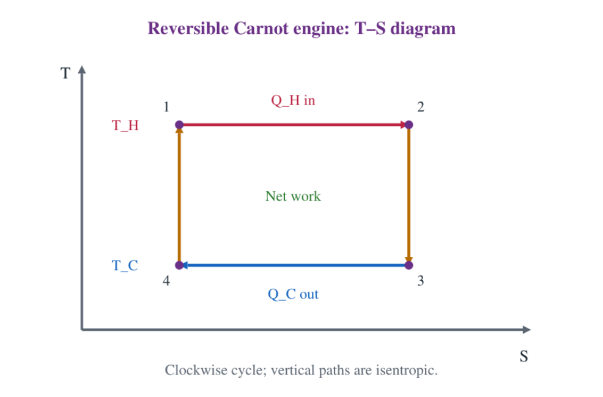
Clockwise Carnot engine on a T–S diagram. Heat transfers are positive magnitudes Q_H and Q_C.
Construction — part and purpose
1. A working fluid in a frictionless piston–cylinder receives heat and provides boundary work.
2. A hot reservoir supplies heat at TH; a cold reservoir receives rejected heat at TC.
3. A conducting contact permits reversible isothermal heat transfer; insulation permits the two reversible adiabatic paths.
Working — step and reason
1. 1 → 2: isothermal expansion at TH. The fluid absorbs QH and expands, producing work while in reversible contact with the hot reservoir.
2. 2 → 3: reversible adiabatic expansion. No heat crosses the insulated boundary; the fluid does work and its temperature falls to TC.
3. 3 → 4: isothermal compression at TC. Work is supplied to the fluid, which rejects QC reversibly to the cold reservoir.
4. 4 → 1: reversible adiabatic compression. No heat crosses; work raises the fluid temperature to TH and restores its initial state.
Paths Temperature and entropy
1 → 2 and 3 → 4 Isothermal: entropy rises during heat addition and falls during heat rejection.
2 → 3 and 4 → 1 Reversible adiabatic, hence isentropic: entropy is constant.
Efficiency
1. Cycle energy balance — Wnet = QH − QC.
Illustrative example
TH = 600 K; TC = 300 K; QH = 200 kJ.
2. Work formula — Wnet = η QH.
3. Substitute — Wnet = 0.50 × 200 kJ.
4. Calculate — Wnet = 100 kJ.
5. Heat rejected — QC = 200 kJ − 100 kJ = 100 kJ.
Check: QH = Wnet + QC, and η = 50%. Real friction and finite temperature differences cause irreversibility, so a real engine is less efficient; the ideal cycle would require limiting, infinitely slow heat transfer.
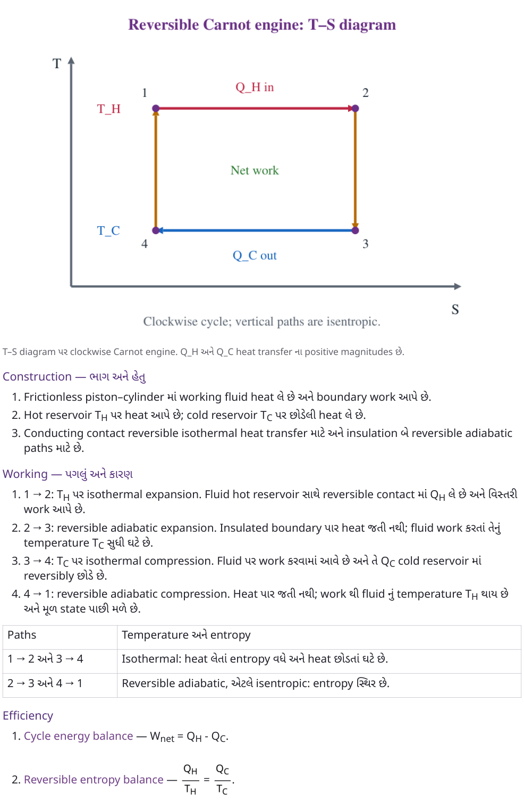
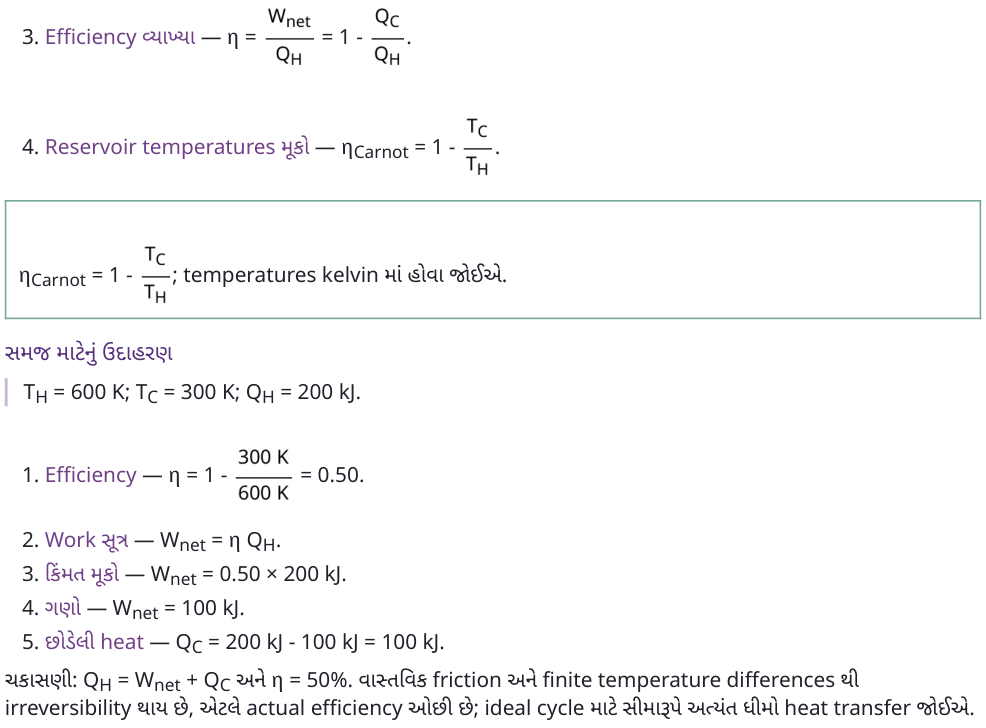
Question 5
Q5 · Entropy and refrigeration
Q.5 (a) · Explain the concept of entropy. · 3 marks
Entropy S is a thermodynamic state property that helps measure the dispersal of energy and the direction of natural processes.
• For an isolated system, entropy remains constant in a reversible process and increases in an irreversible process.
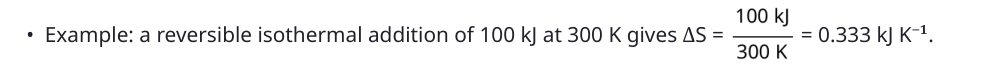
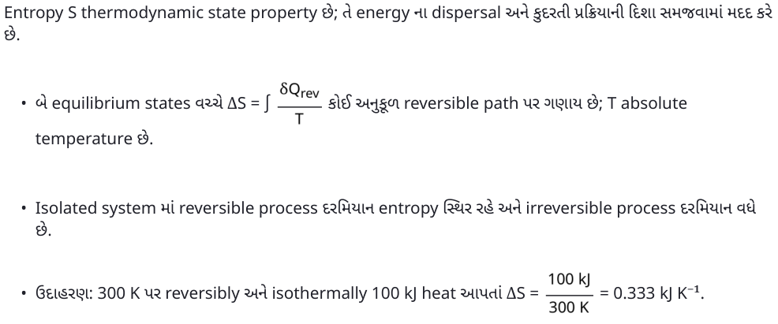
Q.5 (b) · Discuss Clausius inequality. · 4 marks
Clausius inequality applies the second law to a cycle exchanging heat with thermal reservoirs.
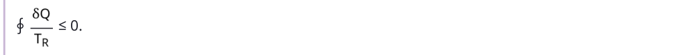
Heat into the cyclic device is positive; TR is the absolute temperature of the reservoir from which that heat crosses.
• The integral is zero for a fully reversible cycle and negative for an irreversible cycle, provided all heat interactions with the surroundings are included.
• For discrete reservoirs it becomes the sum of Qi divided by Ti. Its negative equals entropy generated in the combined cyclic device and reservoirs.
• It restricts possible cycles independently of the first-law energy balance.
Illustrative cycle
Heat in QH = 100 kJ at TH = 500 K.
Heat out QC = 70 kJ at TC = 300 K; use −70 kJ for heat into the device.
Check: both temperatures are in kelvin, and entropy generation is +0.0333 kJ K⁻¹. Do not use the equality for a cycle containing irreversibility.
Q.5 (c) · It is require to freeze 1Kg water at 273K by means of refrigeration machine which operates in the surroundings at 330 K. The latent heat of fusion of ice at 273K is 334.1KJ/ Kg. Determine: (i) The minimum amount of work required. (ii) The heat given up to the surroundings. · 7 marks
The minimum refrigeration work is the reversible Carnot limit between the freezing water and its surroundings.
Given and assumptions
Mass of water m = 1 kg.
Cold temperature TL = 273 K; surroundings TH = 330 K.
Latent heat of fusion L = 334.1 kJ kg⁻¹.
Assume both liquid water and final ice are at 273 K; only latent heat is removed.
Assume a reversible refrigerator and heat exchange at the two stated absolute temperatures.
Step-by-step solution
1. Latent-heat formula — QL = m L.
2. Substitute — QL = 1 kg × 334.1 kJ kg⁻¹.
3. Calculate — QL = 334.1 kJ.
9. Calculate — Wmin = 69.757 kJ.
10. Heat-rejection formula — QH = QL + Wmin.
11. Substitute — QH = 334.1 kJ + 69.757 kJ.
12. Calculate — QH = 403.857 kJ.
Minimum work ≈ 69.76 kJ; heat given to surroundings ≈ 403.86 kJ.
Check: QH is greater than QL by exactly the work input, allowing for rounding; QH divided by 330 K equals QL divided by 273 K in the reversible limit. A real machine requires more work; sensible cooling or heat leakage would add to the load.
Q.5 (a) · Explain different types of refrigerants. · OR · 3 marks
A refrigerant is a working fluid used to absorb heat at a low temperature and reject it at a higher temperature.
• Primary refrigerants circulate in the refrigeration machine and absorb the load directly, often by evaporation; examples are ammonia R717 and HFC R134a.
• Secondary refrigerants carry heat from the cooled space to a primary system, generally without changing phase; chilled brine or aqueous glycol are examples.
• Primary fluids can also be grouped by chemistry: natural fluids include CO₂ R744 and propane R290; synthetic fluids include HFCs and HFOs. These groupings overlap the primary–secondary classification.
Choice involves safety and environmental trade-offs: ammonia is toxic, while propane is flammable.
Q.5 (b) · List out the important properties of a good refrigerant. · OR · 4 marks
A good refrigerant should give effective cooling while satisfying operating, safety and environmental requirements.
![Q.5 (b) OR: preserved source formula, table or diagram, page 46. Extracted text context (formula notation may be incomplete): Property group Desirable characteristics Thermodynamic Low boiling temperature at useful evaporator pressure, moderate condenser pressure and high latent heat per unit mass. Flow and heat transfer High vapour density at compressor suction, low viscosity and good heat- transfer properties reduce equipment size and losses. Chemical and safety Stable, non-corrosive and compatible with materials and lubricating oil; preferably low toxicity and low flammability. Environment and practicality Zero ozone-depletion potential, low global-warming potential, affordable and readily available; leak detection should be practical.](summer-2026.assets/0102.webp)
Example: ammonia has good heat-transfer properties and zero ozone-depletion potential, but toxicity and flammability require safeguards. No single refrigerant optimizes every property; the application and applicable safety rules determine the trade-off.
Q.5 (c) · Explain air refrigeration cycle in detail with diagram. · OR · 7 marks
The air refrigeration cycle, also called the Bell–Coleman or reverse Brayton cycle, uses air as a gaseous refrigerant. The ideal cycle has two isentropic and two constant-pressure processes.
Closed ideal cycle: compressor work in, expander work out, heat rejected at the cooler and absorbed in the cold exchanger.
Schematic T–s cycle: vertical paths are isentropic and curved paths are constant-pressure heat exchange.
Construction — part and purpose
1. Compressor: takes low-pressure air and raises its pressure and temperature using shaft work.
2. Cooler: rejects heat from the high-pressure air to the surroundings.
3. Expander: reduces air pressure and temperature while recovering shaft work.
4. Cold-space heat exchanger: lets cold air absorb the refrigeration load before returning to the compressor. The piping closes the air loop.
Working — step and reason
1. 1 → 2, isentropic compression: pressure and temperature rise because work is supplied; ideally no heat crosses.
2. 2 → 3, constant-pressure cooling: the hot air rejects qH to the surroundings at high pressure, reducing its temperature.
3. 3 → 4, isentropic expansion: the expander produces work, reducing pressure and temperature; ideally no heat crosses.
4. 4 → 1, constant-pressure heating: cold air absorbs qL from the refrigerated space and returns to the compressor at low pressure.
Ideal energy relations
For one unit mass of ideal air, constant cp, negligible kinetic and potential changes, adiabatic reversible machines and no pressure drops in the heat exchangers:
qL = cp(T1 − T4).
wc = cp(T2 − T1).
wt = cp(T3 − T4).
qH = cp(T2 − T3).
Illustrative example
Assume cp = 1.00 kJ kg⁻¹ K⁻¹, constant.
T1 = 300 K; T2 = 450 K.
T3 = 360 K; T4 = 240 K.
These temperatures have T2 divided by T1 equal to T3 divided by T4, consistent with the same ideal pressure ratio.
1. Cooling effect — qL = 1.00 kJ kg⁻¹ K⁻¹ × (300 − 240) K = 60 kJ kg⁻¹.
2. Compressor work — wc = 1.00 kJ kg⁻¹ K⁻¹ × (450 − 300) K = 150 kJ kg⁻¹.
3. Expander work — wt = 1.00 kJ kg⁻¹ K⁻¹ × (360 − 240) K = 120 kJ kg⁻¹.
4. Net work — wnet = 150 kJ kg⁻¹ − 120 kJ kg⁻¹ = 30 kJ kg⁻¹.
Check: qH = 1.00 kJ kg⁻¹ K⁻¹ × (450 − 360) K = 90 kJ kg⁻¹ = qL + wnet. Air is non-toxic and useful in aircraft, but a gas cycle often has a lower COP than vapour-compression refrigeration, and real compressor and expander losses reduce performance.